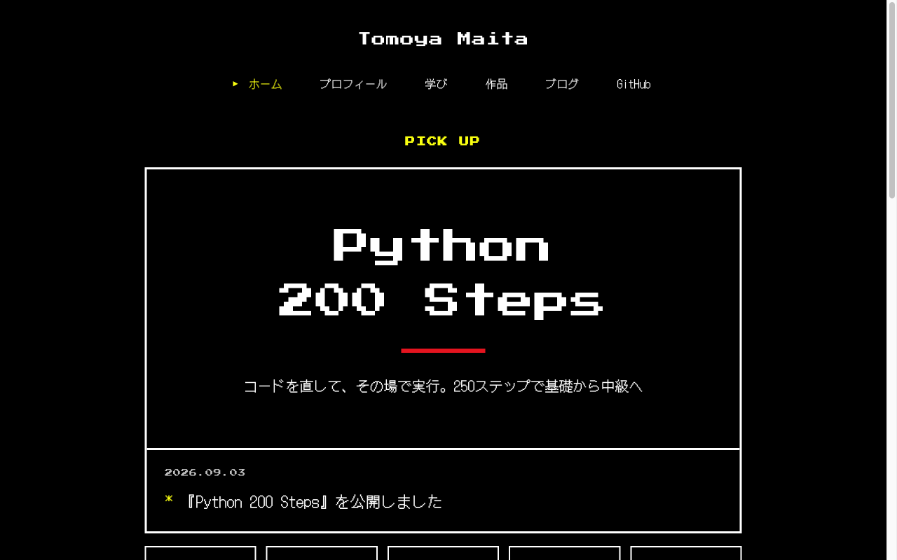
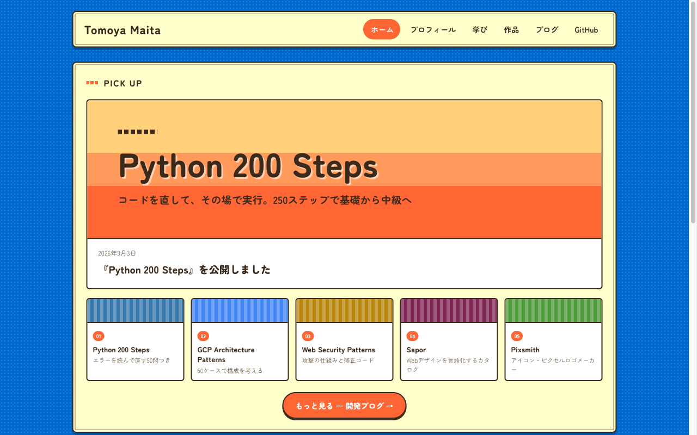
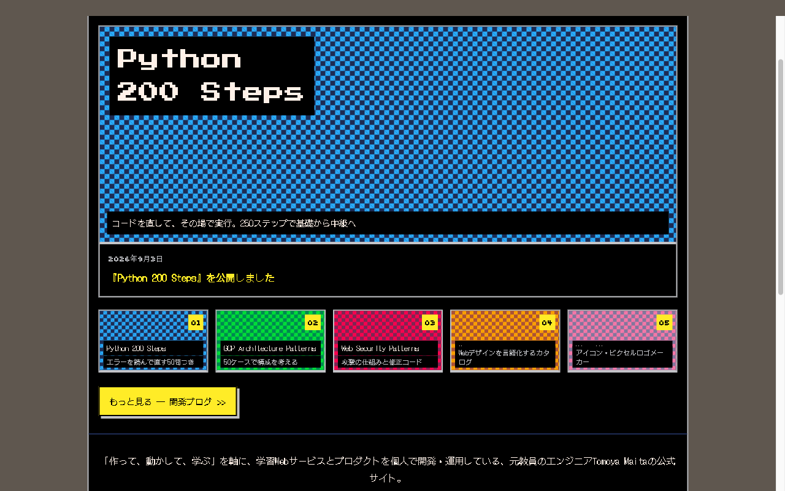
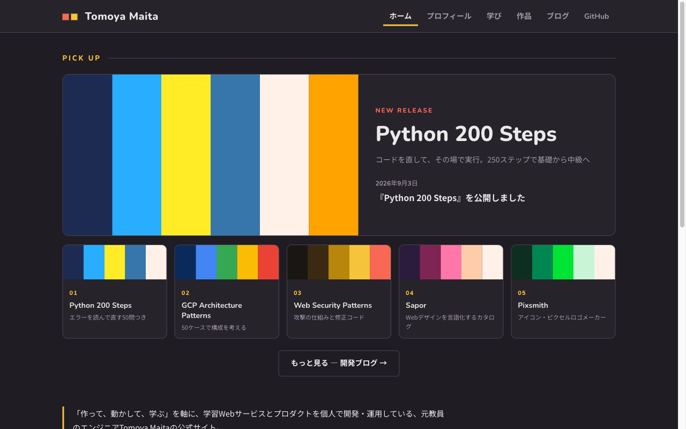
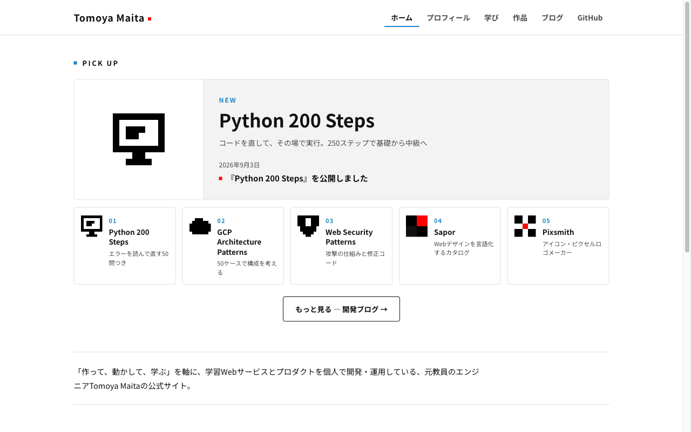
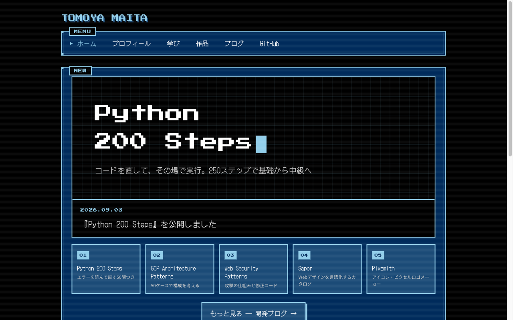
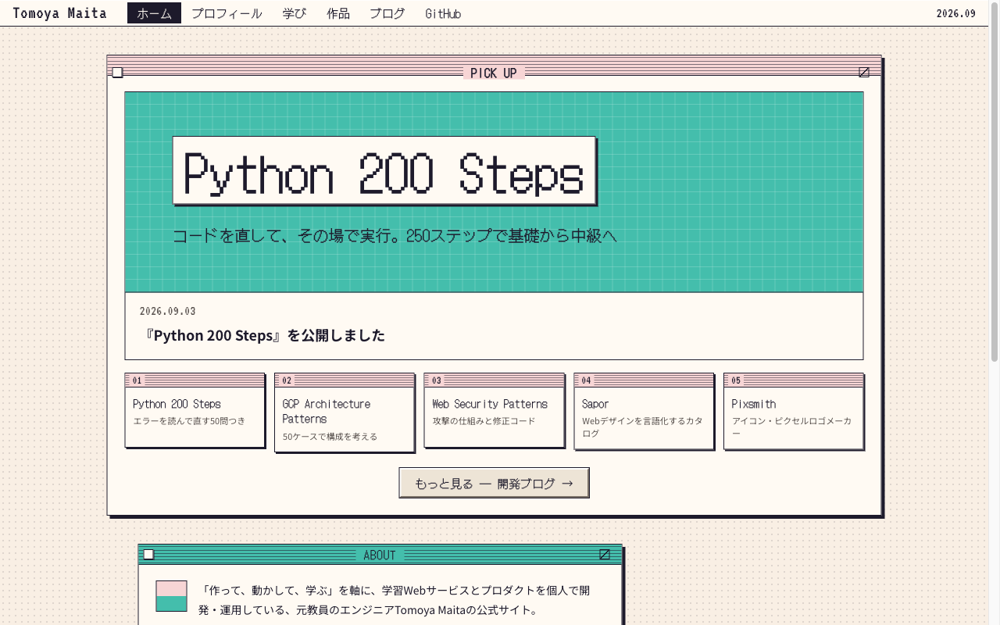

ホームの内容はそのままに、参考サイトごとの雰囲気で作った7バージョン。気に入ったものを全ページに展開する。

Undertale版参考：undertale.com黒地に赤と黄の2色。8bit書体は見出しだけ。1画面1メッセージの余白。

Stardew Valley版参考：stardewvalley.net空の青にクリーム色の紙。丸ゴシックと紙の質感で牧歌的に。

PICO-8版参考：lexaloffle.com/pico-816色パレットだけで構成。本文までドット書体。

Lospec版参考：lospec.com/palette-listダークグレーに赤と黄。UIは現代的で、ピクセル感はパレットタイルが担う。

DOTOWN版参考：dotown.maeda-design-room.net白地に黒。CSSで描いたドット絵アイコンが主役で、枠組みは静か。

Pixel Art Academy版参考：pixelart.academyサイト全体をゲームのメニュー画面に見立てる。黒地に紺のパネルと水色。

Poolsuite版参考：poolsuite.net昔のOSのデスクトップ見立て。ウィンドウ、メニューバー、タスクバー。